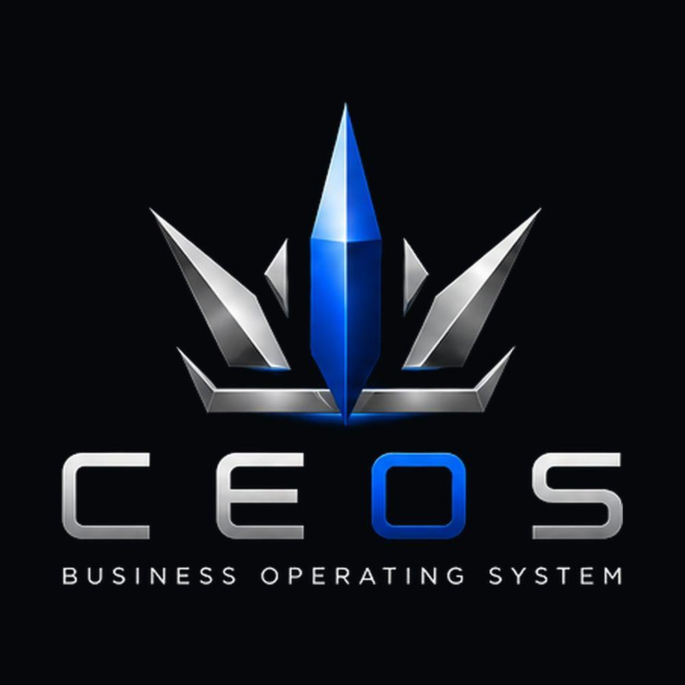
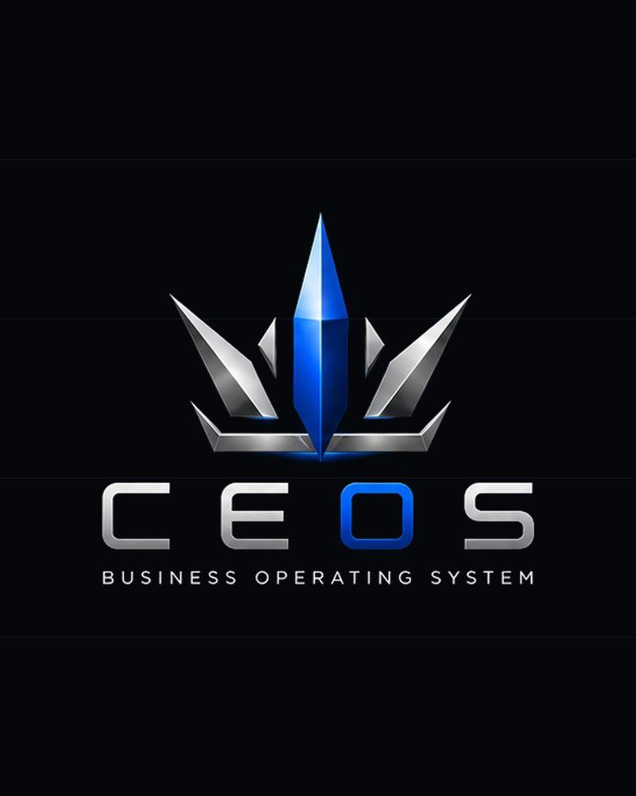

CE OS
A founder-run operating system: an agency that builds software, sites, brand, and automation for clients, and the company behind a portfolio of its own SaaS products. Designed, built, and shipped end to end by one person.

The idea
Most small businesses don't have a marketing problem. They have a disconnected-tools problem — a site here, leads in an inbox, a booking app, a spreadsheet, payments somewhere else. CE OS is built around one answer: connect the brand, the website, the leads, the workflows, the payments, and the reporting into one operation the owner actually owns.
It runs as two things at once: a studio that builds this for clients, and a company that ships its own products on the same system.
What I built
Brand system
Identity, design tokens, and messaging — the "build the system behind the business" positioning.
Full website
A multi-page site with a signature Business System Map and a Business-Scan conversion.
Product model
The five-layer system (Present, Capture, Operate, Deliver, Improve) that makes the offer legible.
Client delivery
The playbook that took Titanium Detailing from invisible to bookable in about a week.
Internal ops
A command center — scored leads, quote builder, and CRM-wired status — that runs the studio.
Product portfolio
Shiftly, STAKE, PLUG, and more — built on the same rails as the client work.


Why it matters
CE OS is the clearest proof of the whole thesis: not decorating a business, but building the identity, the experience, the tools, and the operation behind it — and doing it as one connected system rather than six disconnected vendors.
◉ Proof: active studio with a paid client engagement (Titanium Detailing) and a set of in-house products at varying stages (early sales → building). Product statuses are labeled honestly on each case page. "6+ products" reflects the current venture stack, not launched revenue.